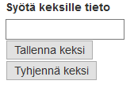
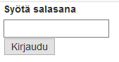

Demo 11, eväste ja istunto
Eväste (tai keksi) säilytetään käyttäjän selaimessa, käytännössä globaali muuttuja joka on olemassa tietyn ajan (tai kunnes välimuisti tyhjennetään). Istunto (sessio) säilöö uniikin ID-luvun client-puolella ja varsinaisen tiedon server-puolella.
Keksien käyttö on yksinkertaisempaa mutta sisältävät tietoturvariskin (keksit luettavaa tietoa selaimessa).
demo11a.php
Laadi tiedosto demo11a.php. Tee lomake jolla voidaan syöttää keksille arvo ja toinen lomake jolla voidaan tyhjentää keksi.

Tee ensin lomake
<form method="post"> <label for="keksi">Syötä keksille tieto</label><br /> <input type="text" name="keksi" value="" /><br /> <input type="submit" value="Tallenna keksi" /><br /> </form>
<form method="post"> <input type="submit" name="tyhjenna" value="Tyhjennä keksi" /> </form>
Tämän jälkeen lisää yläpuolelle lomakkeenkäsittelijä:
// lomakkeen käsittely
if (isset($_POST["keksi"])) {
// yritetään tallentaa
setcookie("keksi",$_POST["keksi"], time() +1800);
}
Tyhjentäminen menee seuraavasti
// jos lähetetään tyhjennä:
if (isset($_POST["tyhjenna"])) {
setcookie("keksi","", time() -1800);
}
demo11b.php
Laadi toinen tiedosto demo11b.php jolla näytetään lomake salasanan syöttämistä varten.

- Lomakkeenkäsittelijässä tarkistetaan tuliko salasana, jos salasana on "salasana" niin tulostetaan teksti "Tunnus oikein" ja tallennetaan salasana evästeeseen.
- Jos salasana on jotain muuta niin tulostetaan tunnus väärin ja tuhotaan eväste.
- Jos kirjauduttu-eväste löytyy niin näytetään uloskirjautuminen, muuten näytetään kirjautuminen.
1. Tee aluksi lomake, näytetään joko sisäänkirjautuminen tai uloskirjautuminen
<?php
// lomakkeenkäsittely
// apumuuttuja - ollaanko kirjauduttu
$ok = false; // oletuksena ei kirjauduttu
// -- TÄHÄN LOMAKKEENKÄSITTELIJÄ --
// 1. jos ei olla kirjauduttu
if ($ok == false) {
?>
<form method="post">
<label for="password">Syötä salasana</label><br />
<input type="password" name="password" /><br />
<input type="submit" value="Kirjaudu" />
</form>
<?php
}
else {
// 2. jos ollaan kirjauduttu niin
?>
<form method="post">
<input type="submit" name="logoff" value="Kirjaudu ulos" />
</form>
<?php
}
?>
2. Lomakkeenkäsittelijässä tarkistetaan onko eväste tallennettu tai onko syötetty oikea salasana
if (isset($_COOKIE["ok"])) {
$ok = $_COOKIE["ok"];
}
else if (isset($_POST["password"])) {
if ($_POST["password"] == "salasana") {
// käyttäjä antoi oikean salasanan
setcookie("ok", true, time() +1800);
echo "Tunnus oikein!";
$ok = true;
}
else {
// käyttäjä antoi väärän salasanan
echo "Tunnus väärin :( ";
}
}
Viimeinen asia on uloskirjautuminen - tyhjennetään eväste jos painetaan logoff-nappia:
// jos painettiin logoff-submit:
if (isset($_POST["logoff"])) {
setcookie("ok","", time() -1800);
$ok = false;
}
demo11c.php
Tehdään kirjautuminen myös käyttäen istuntoa.
1. Käytä samanlaista alkuosaa kuin evästeen kanssa, vain lomakkeenkäsittelijä on erilainen.
2. Lomakkeenkäsittelijässä tarkistetaan syöte ja kirjaudutaan:
// lomakkeenkäsittely
session_start(); // ottaa istunnon käyttöön
// apumuuttuja - ollaanko kirjauduttu
$ok = false; // oletuksena ei kirjauduttu
if (isset($_SESSION["ok"])) {
$ok = true;
}
if (isset($_POST["password"])) {
if ($_POST["password"] == "salasana") {
echo "Salasana oikein!";
$ok=true;
$_SESSION["ok"] = true;
}
else {
echo "Salasana meni väärin...";
$ok = false;
}
}
if (isset($_POST["logoff"])) {
session_unset();
session_destroy();
}